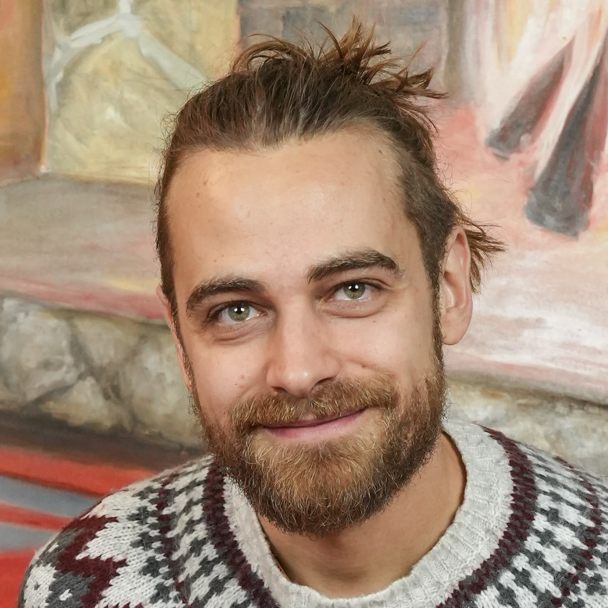
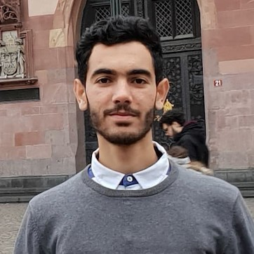
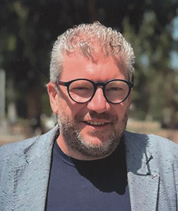
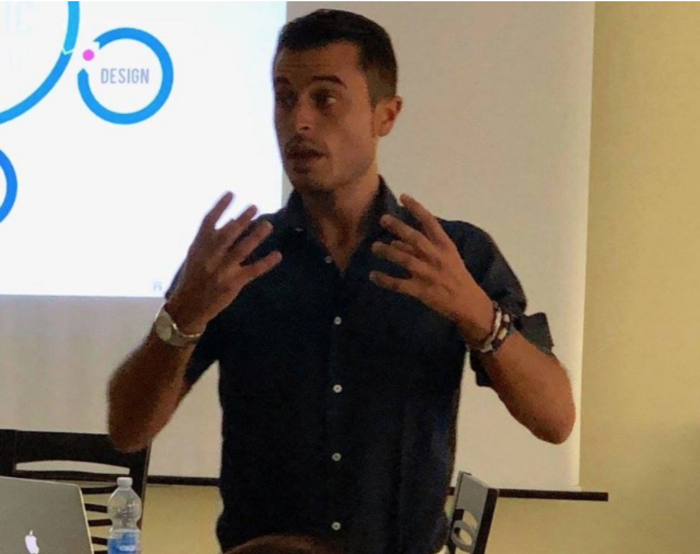
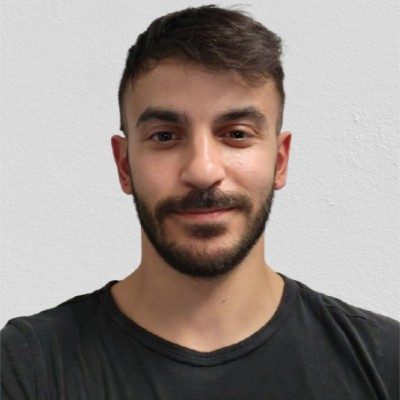
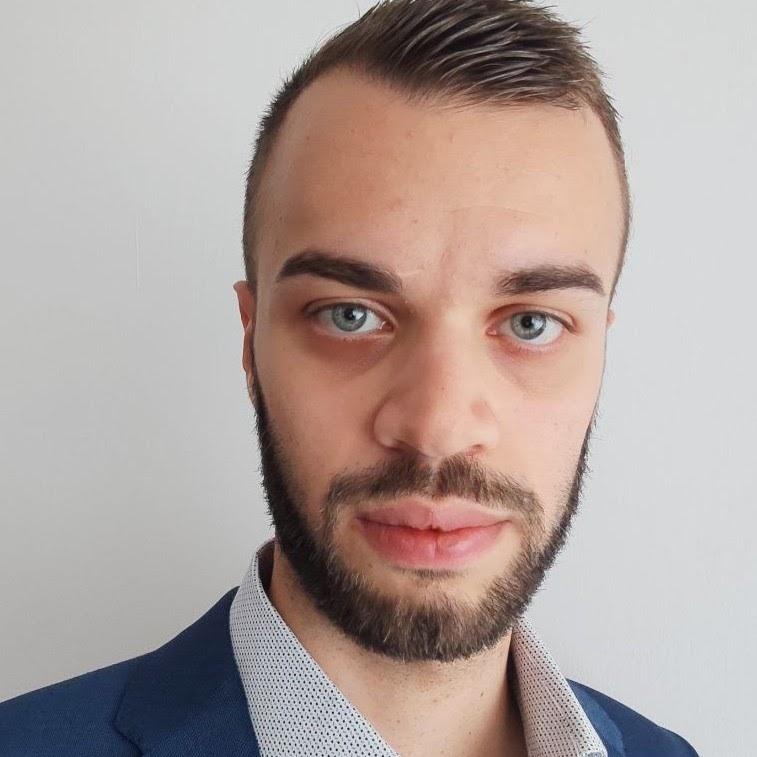

AI for medical 3D reconstruction and neural rendering
AI-driven methods for medical 3D reconstruction, NeRF and Gaussian Splatting approaches, and neural rendering techniques applied to clinical imaging data.
ECCV 2026 · Workshop
Artificial Intelligence for Medical 3D Vision
Medical 3D vision lies at the intersection of artificial intelligence, computer vision, computer graphics, and medical imaging. It is becoming increasingly crucial for diagnosis, surgical planning, simulation, and personalised healthcare.
Recent advances in deep learning, generative models, neural rendering, and vision-language approaches have enabled significant progress in 3D reconstruction, 3D generation, novel view synthesis, and the immersive visualization of medical data, including XR-supported applications. This also extends to neuroscience, with approaches that reconstruct 3D representations from neural data.
The goal of this workshop is to highlight innovative, AI-driven techniques for 3D vision in the medical field and encourage discussion about the unique challenges in this field, including data scarcity, noise, anatomical variability, robustness, interpretability, and clinical reliability.
This workshop aims not only to serve as a venue for presenting work in this area but also to build a community and share information in this new field.
We invite original, previously unpublished work addressing, but not limited to, the following topics:
AI-driven methods for medical 3D reconstruction, NeRF and Gaussian Splatting approaches, and neural rendering techniques applied to clinical imaging data.
Diffusion models, GANs, and other generative architectures for synthesising, augmenting, or simulating medical and neural 3D data.
VLMs and multi-modal foundation models for 3D understanding and grounding of medical images, enabling richer cross-modal representations.
Extended reality (AR/VR/MR) tools for immersive medical visualisation, surgical training, simulation, and patient-specific planning.
Large-scale pre-training and self-supervised learning strategies adapted for medical 3D vision with limited or no labelled data.
Methods that address the inherent clinical challenges of data scarcity, imaging noise, anatomical variability, and multi-modal heterogeneity.
All deadlines at 23:59 Anywhere on Earth (AoE).

University of Modena and Reggio Emilia, Italy
Tenure-Track Assistant Professor at the University of Modena and Reggio Emilia, where he is part of the AImagelab research group. He earned his B.Sc. and M.Sc. degrees (cum laude) in Computer Engineering and completed his Ph.D. in ICT at the same university.
His research spans image processing, algorithm optimization, and medical imaging, including optimization of binary image processing on CPU/GPU, skin lesion segmentation for melanoma detection, CBCT maxillofacial segmentation, and whole-slide image analysis. He contributed to the H2020 DeepHealth project (co-leading the European Computer Vision Library, ECVL) and has been involved in the H2020 DECIDER project since 2022. Federico chairs the IAPR Technical Committee (TC22) on Reproducible Research and is a member of IEEE, MICCAI, and CVPL. He serves as Associate Editor for Pattern Recognition and Simulation & Game.

INRIA, France
Computer Vision PhD Student at INRIA, France, working with Prof. Adnane Boukhayma and Prof. Eric Marchand. His research focuses on deep learning for 3D reconstruction (creating virtual twins) and 3D generative AI.
He has worked on improving generalizable implicit reconstruction models and implicit representation learning from sparse inputs (point clouds, multi-view images). He is currently exploring how to improve the controllability of video generation for 3D-oriented tasks.

University of Macerata, Italy
University of Bologna, Italy
University of Macerata, Italy

GAP Lab, Università Politecnica delle Marche, Italy

Harvard Medical School, USA

University of Bologna, Italy

GAP Lab, Università Politecnica delle Marche, Italy
City University of Hong Kong, HK
Universidad Torcuato Di Tella, Argentina
University Medicine Halle (Saale), Germany
September 8-9, 2026 - Full schedule to be announced.
| Time | Session | Details |
|---|---|---|
| TBD | Opening | TBD |
| TBD | Invited Talk 1 | TBD |
| TBD | Oral Session 1 | TBD |
| TBD | Coffee Break | TBD |
| TBD | Invited Talk 2 | TBD |
| TBD | Oral Session 2 | TBD |
| TBD | Poster Session | TBD |
| TBD | Closing | TBD |